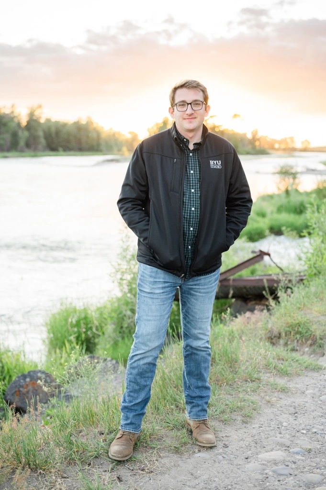

Parker Johnson | WDD 130
Hello! My name is Parker Johnson and I am from Rexburg, Idaho. I am married and have two kids. I have a bachelors degree in biology from BYU-I and an MBA from Western Governors University. I oversee several projects for student records and registration including building the academic programs, evaluating potential systems, and managing the Grad Planner tool I have a strong background in project management, data analysis, and technology implementation. I have worked in higher education for over 10 years, starting as a student worker and now in a leadership role. My passion is finding ways to improve processes and systems to better serve our students and staff. In my free time, I enjoy hiking, camping, and exploring the beautiful outdoors of Idaho. I also love spending time with my family, reading, and taking care of my indoor plants.